Elden Ring - Everything you need to know
Prepare for the release of Elden Ring by learn everything you need to know about FromSoftware's next challenging game.
Elden Ring is coming out in 2022. In fact, its coming out in January, which means theres not long now until you can lose yourself once more in the immaculately crafted world of a FromSoftware game. Before that time comes, though, youll want to get your hands and eyes on every little bit of information available. So, heres everything you need to know about Elden Ring.
Elden Ring release date
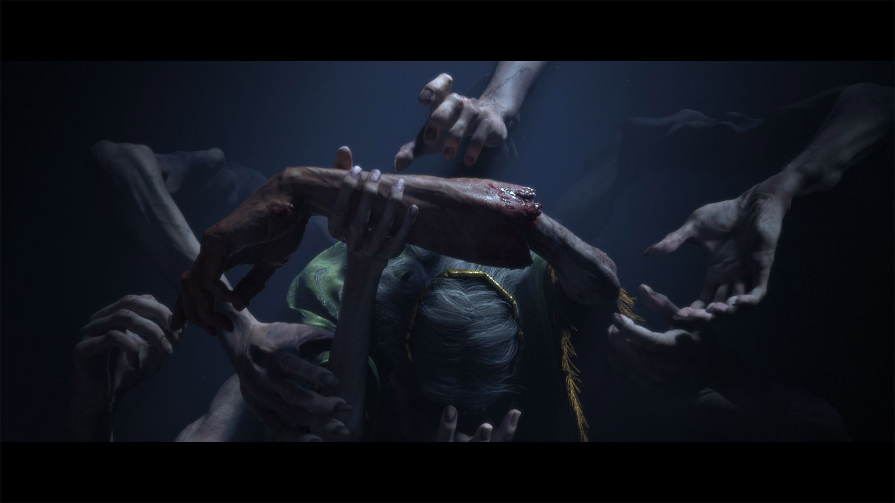First, lets tackle the big important one: when youre going to play Elden Ring. Thanks to the Summer Game Fest 2021, players now know that Elden Ring is releasing on January 21, 2022. This is a little bit earlier than FromSoftwares typical April release date, which means we get to play it even sooner. Elden Ring is releasing on Xbox One, Xbox Series X/S, PlayStation 4, PlayStation 5, and PC.
George R.R. Martin helped with the mythos
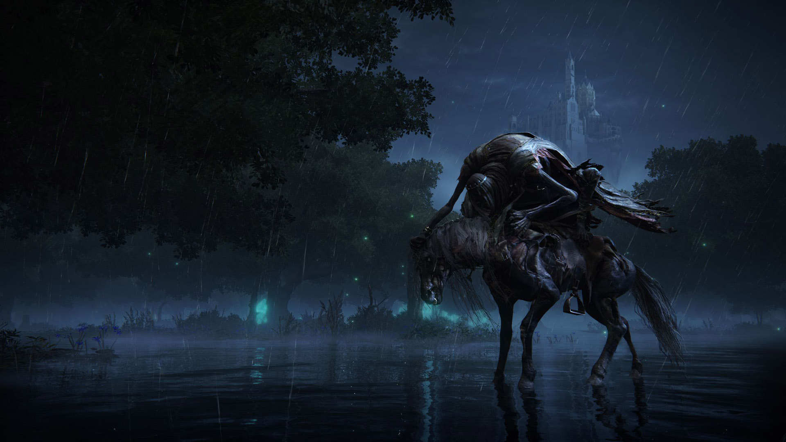In an interview with Xbox Wire, Game Director Hidetaka Miyazaki revealed that he is a big fan of George R.R. Martin. Thanks to the Executive Business Director Eiichi Nakajima, Miyazaki and Martin were able to connect, which kicked off the creative process.
According to Miyazaki, he and Martin had “many free and creative conversations” about the game, which the author then used to write the “overarching mythos” of Elden Ring. The development staff then used the interesting characters, drama, as well as mythical and mysterious elements as inspiration.
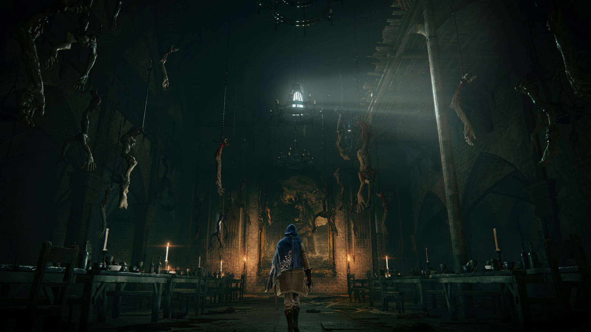Including a fabled author like George R.R. Martin in on the creative writing process of a video game is a sure fire way to make a games narrative truly incredible. Miyazaki also expresses glee about the mythos Martin created, “Even I myself find it hard to contain my excitement from time to time.”
Elden Ring reveal trailer and gameplay trailer
Before we get to dissecting, you will want to check out the Elder Ring trailers that are available for your watching. First, theres the initial announcement trailer, which set off the fervent obsession with the title.
Then, as it felt like the age of man was coming to an end, FromSoftware blessed us with another glimmer of hope in the form of a gameplay trailer. Check out this goodness.
Well be sure to update this section as more trailers are revealed. Hopefully this isnt the last of them until the launch trailer. Is it too much to hope for a proper gameplay demo, even if its a developer playing?
Open world, but also intricately designed
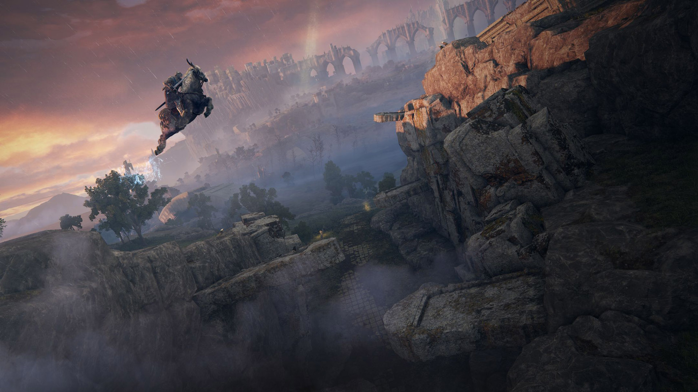The area players will explore in Elden Ring is known as the Lands Between, and it is set to be bigger than anything else FromSoftware has designed. In the same Xbox Wire interview mentioned above, Miyazaki shed some light on what type of “open world” experience players should anticipate from Elden Ring.
Firstly, there will be a sense of freedom when it comes to exploration. While Dark Souls offers a quasi-open world experience, no one would liken it to Skyrim. Miyazaki notes that the team has tried its own approach when it comes to large, open fields to play in.
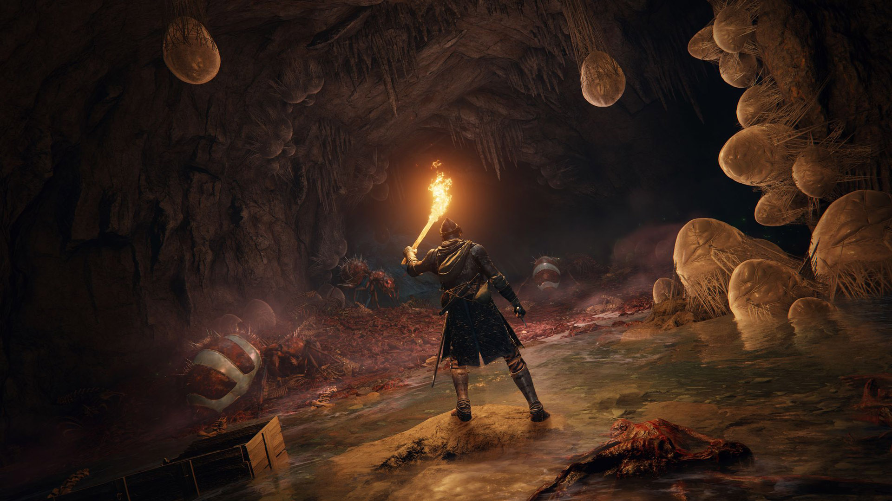Now, some long-time Soulsborne veterans might recoil at the term “open world” but Miyazaiki notes that there will also be “intricately designed, multi-layered castles and such.” So, while you will be able to find open areas and large spaces worth exploring, it sounds like there will also be that iconic level design principles players have come to expect from a Soulsborne title, i.e.: does not open from this side.
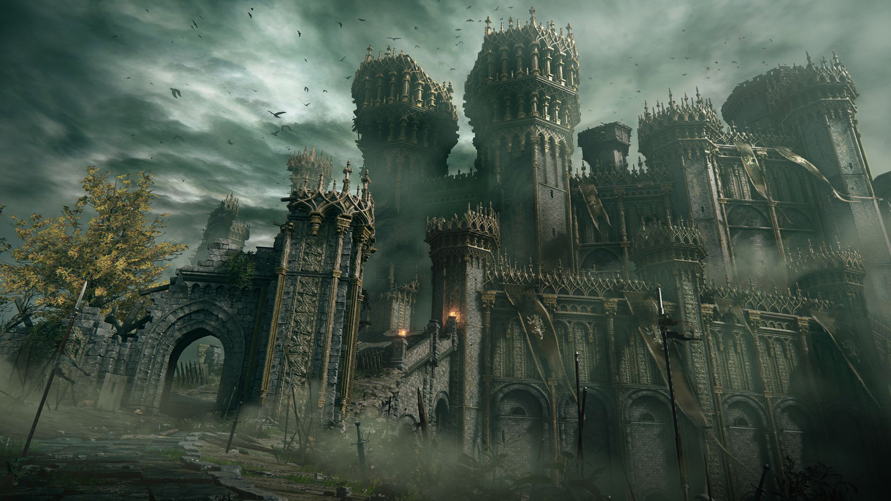The size and design of Elden Ring has allowed the team to do things they, “Werent able to do in the Dark Souls series,” according to Miyazaki. So expect to encounter mechanics and ideas well beyond the scope of whats come before.
It has a ghost horse
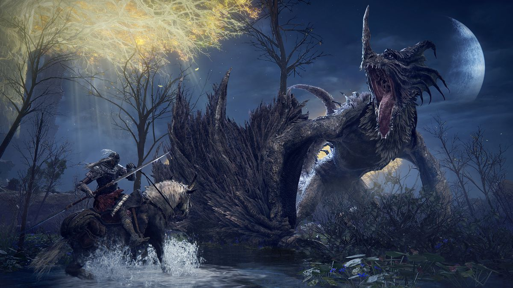Miyazaki doesnt seem to expect players to slog around a massive open world on foot. To this end, the gameplay trailer appeared to show the player summoning a horse to ride. As the character whistles, a stallion appears below them, Darksiders-style, and off they gallop.
But its not just for faster movement, the horse can also be seen performing some incredible jumps thanks to the assistance of wind jumps that launch it into the air. It also looks like the horse can perform a double-jump, which is utilized in the trailer to avoid the attack of a boss.
In a recent preview of Elden Ring, the developers revealed that this mount is actually a ghost horse named the Spirit Steed. What's more, players will develop a bond with their horse over the course of Elden Ring's story, and it can even fight alongside them in combat.
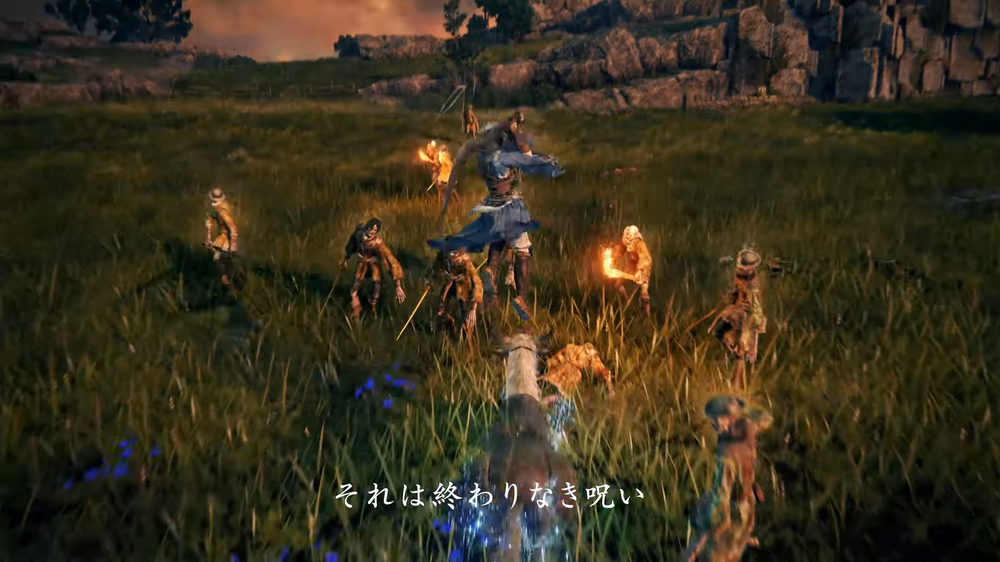Oh, and did we mention combat from horseback? Well, the trailer shows plenty of horse-based combat. It looks as if players will be able to hack and slash at other horse-mounted foes and even launch off of their trusty steed into groups of enemies.
Swords, Magic, and Stealth
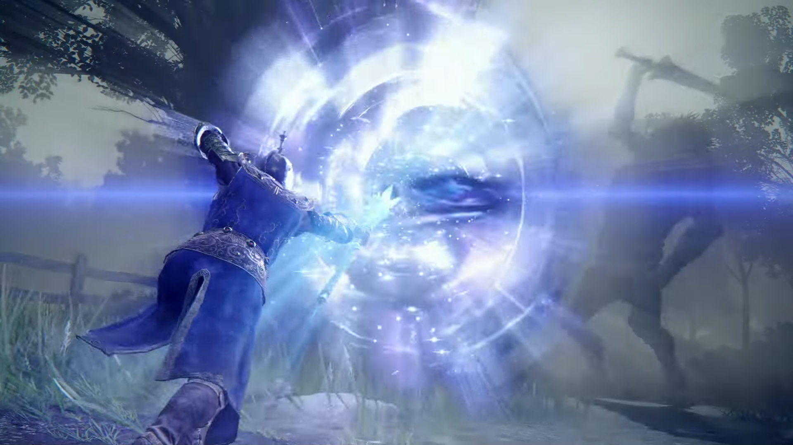Elden Ring will also feature a return to more player choice when it comes to combat. Though Sekiro: Shadows Die Twice offered a tight and precise combat system, outside of the prosthetics, players were locked to using the Wolfs Kusabimaru and, in certain contexts, the Mortal Blade. Elden Ring offers a wealth of options, including various swords, hammers, whips, bows and arrows, and of course, magic.
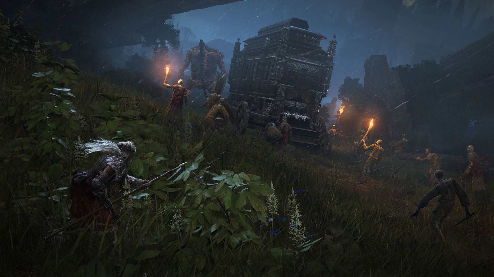Some screenshots and information also shows that stealth will be a factor in Elden Ring. The inclusion of stealth in Sekiro was a welcomed addition, especially as it afforded players another means of interacting with the world and approaching challenges. Miyazaki notes this in his interview with Xbox Wire, stating, “I believe this title will provide even more variety in the ways for players to overcome challenges and tweak their tactics when facing enemies.”
Day, night and weather cycles
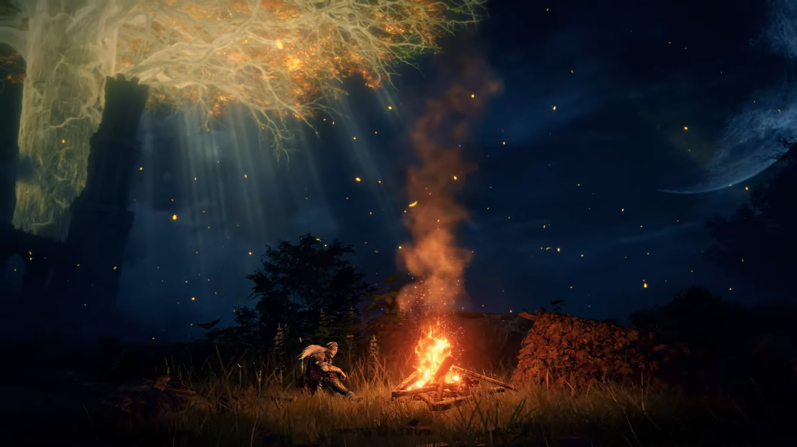Unlike other Soulsborne titles where the day and night and other world events are dependent on location or other triggers, Elden Ring promises to have a day and night cycle. This is shown off in the trailer with the main character resting at a bonfire with the massive, Yggdrasil-like Erdtree tree in the background. Hopefully certain events occur at certain times, which will mean players might have to actually rest at a bonfire to pass time, not just restore health.
There will also be weather cycles present in Elden Ring. Whether these are dynamic, dependent on events, or scripted into certain sections remains to be seen. Though, I think we can all agree that it was pretty awesome to fight the Looking Glass Knight on top of a tower as rain was pouring down with lightning arcing through the sky.
The Elden Ring story
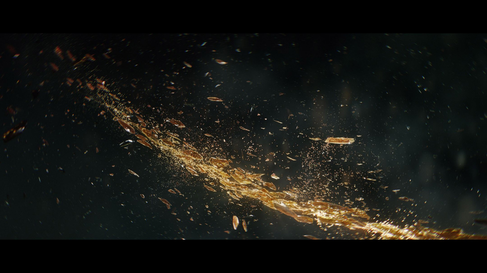When it comes to story, as is tradition with Soulsborne titles, theres not much to go on. Miyazaki has hinted the Elden Ring is the “name given to a mysterious concept that defines the world itself.” The original teaser showed what appeared to be this Elden Ring being shattered. However, the official Elden Ring website offers even more information on the backdrop:
Rise, Tarnished, and be guided by grace to brandish the power of the Elden Ring and become an Elden Lord in the Lands Between.
In the Lands Between ruled by Queen Marika the Eternal, the Elden Ring, the source of the Erdtree, has been shattered.
Marika's offspring, demigods all, claimed the shards of the Elden Ring known as the Great Runes, and the mad taint of their newfound strength triggered a war: The Shattering. A war that meant abandonment by the Greater Will.
And now the guidance of grace will be brought to the Tarnished who were spurned by the grace of gold and exiled from the Lands Between. Ye dead who yet live, your grace long lost, follow the path to the Lands Between beyond the foggy sea to stand before the Elden Ring.
And become the Elden Lord.
It seems as if the Elden Ring is both the source of the Erdtree as well as the power of the Elden Lords. The narrative seems to indicate that the Elden Ring was shattered into Great Runes, which were claimed by Queen Marikas offspring, who are all some kind of demigod. Those familiar with the story of Dark Souls will no doubt be seeing similarities here. Theres a good chance players will need to do what we do best which is hunt down these demigods, defeat them, and take back the Great Runes.
The Tarnished
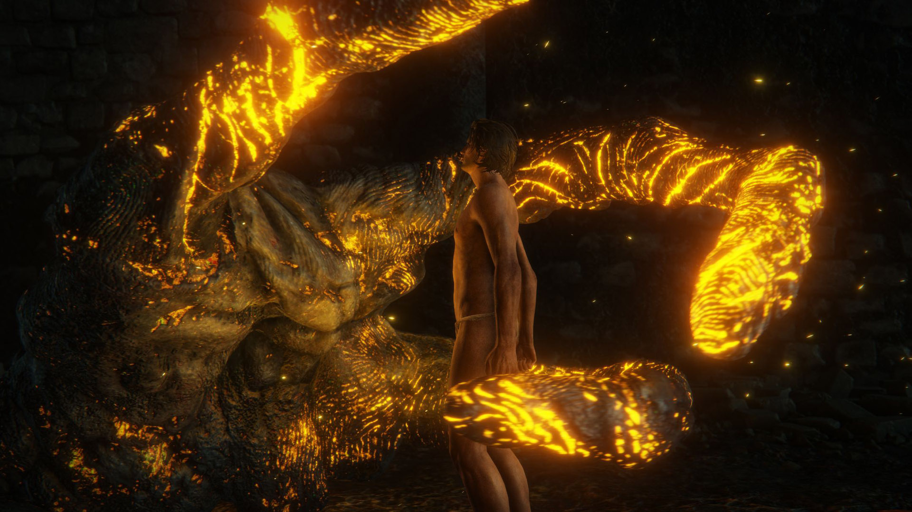Dark Souls had its Hollows and Undead Curse. Bloodborne had its Old Blood and the hunt that ensued. Sekiro had its Dragonrot and Infested. And now, Elden Ring has its Tarnished. The trailer from the Summer Game Fest 2021 had a voice over that mentioned the Tarnished, that they would return, and then another masculine voice seems to talk to the player, referring to them as the Tarnished. Furthermore, he seems to think were in search of the Elden Ring.
It will be challenging
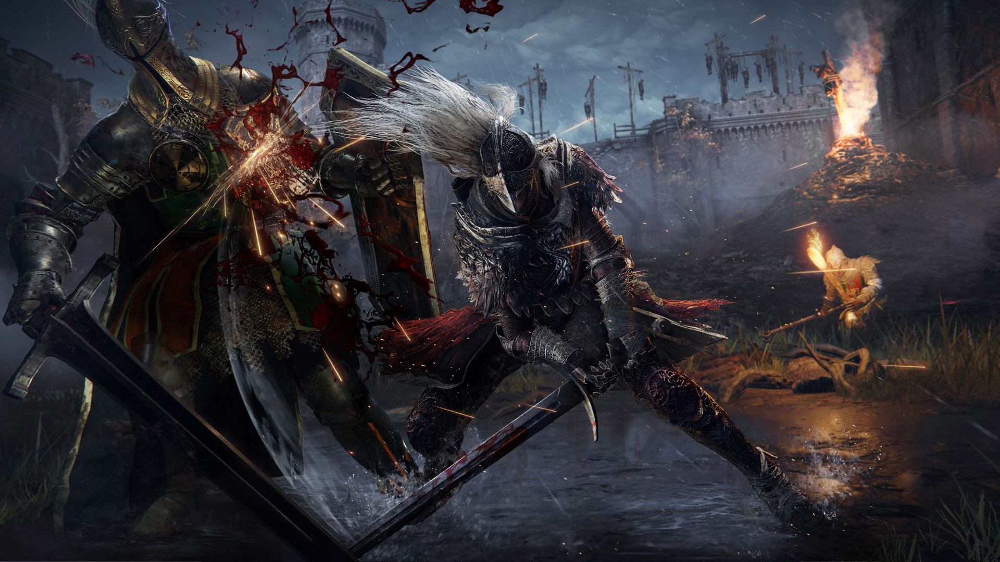Miyazaki seems to pride himself on creating challenging titles. The team places huge importance on the player receiving joy through overcoming adversity. To this end, Elden Ring promises to be a “very satisfying experience” which sounds like code for “super difficult bosses”.
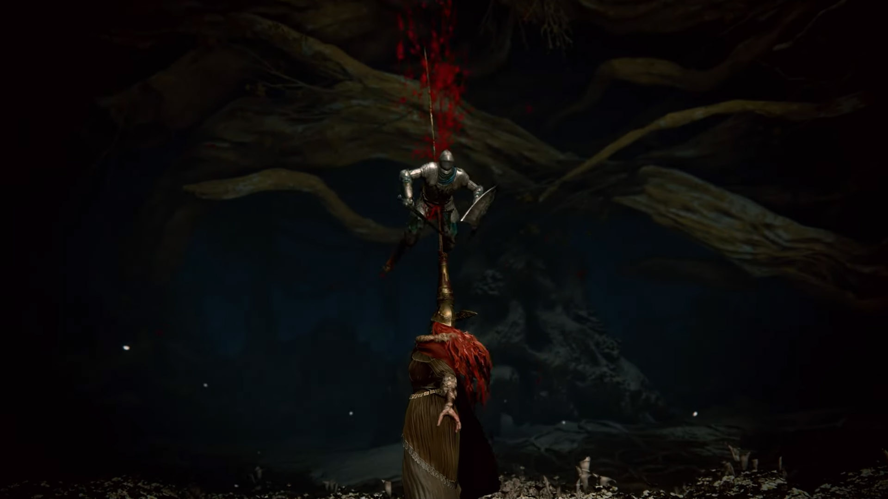Players got a chance to witness some of these bosses in the Summer Game Fest 2021 trailer. There was the Elven-looking character with the prosthetic arm, a massive beast with too many arms, a humanoid being with a tiger face, dragons, giants, spectral reindeer, a man with a flaming cup on his head, and plenty of big hands. Suffice it to say, there looks to be plenty of variety when it comes to boss designs.
Co-op returns
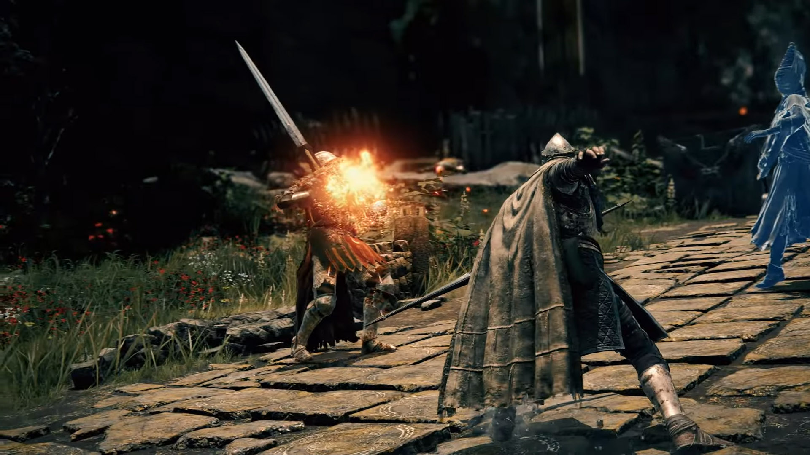Elden Ring also boasts co-op, a feature that was not included in the design of Sekiro: Shadows Die Twice. Players will be able to explore the world alone or online with other players, which will no doubt come in handy for those that need some assistance with bosses. But, its also nice to just sit back and soak up the majesty of a Soulsborne landscape.
If our assumption is correct, it looks as if summoned players are tinted blue, which is a common theme in Soulsborne titles.
A seamless world
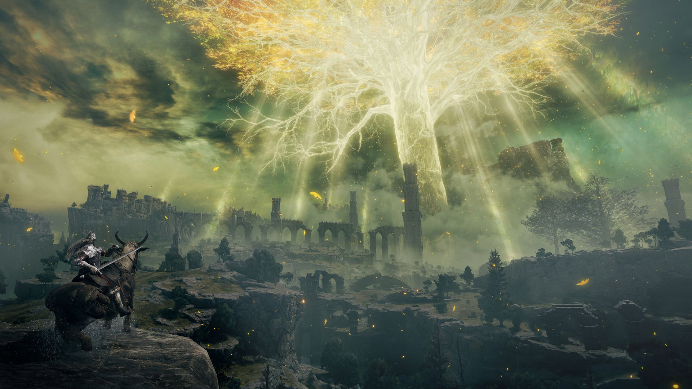The official Elden Ring website states that Elden Ring will include fantastical landscapes and complex dungeons, which are “connected seamlessly.” This type of wording is typically reserved to describe a game that features no loading screens between major areas. Each FromSoftware games features this, save for Demons Souls, but if Elden Ring is the biggest game yet, this is truly an incredible testament.
It has an in-game map
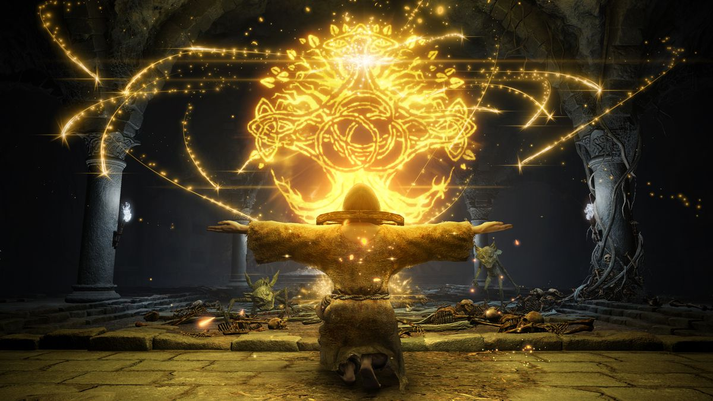Elden Ring has an in-game map, FromSoftware recently confirmed in an early preview of the game. This may seem pretty standard, but its actually quite the fascinating addition. The Dark Souls games, Sekiro, as well as Bloodborne, all lacked a map, which just added to what was already a challenging experience for players - having to memorize locations and areas on top of dealing with the creatures within them.
FromSoftwares decision to implement an in-game map in Elden Ring could mean a couple of things. One, that the world is simply massive. So large that it would just feel wrong to not give players some means of overviewing it all. In the glimpses weve seen, its clear that Elden Rings world is expansive, filled with diverse locations and areas. It could also mean that the developer may have had a change in philosophy about how it should approach challenging the player.
There will be fast travel
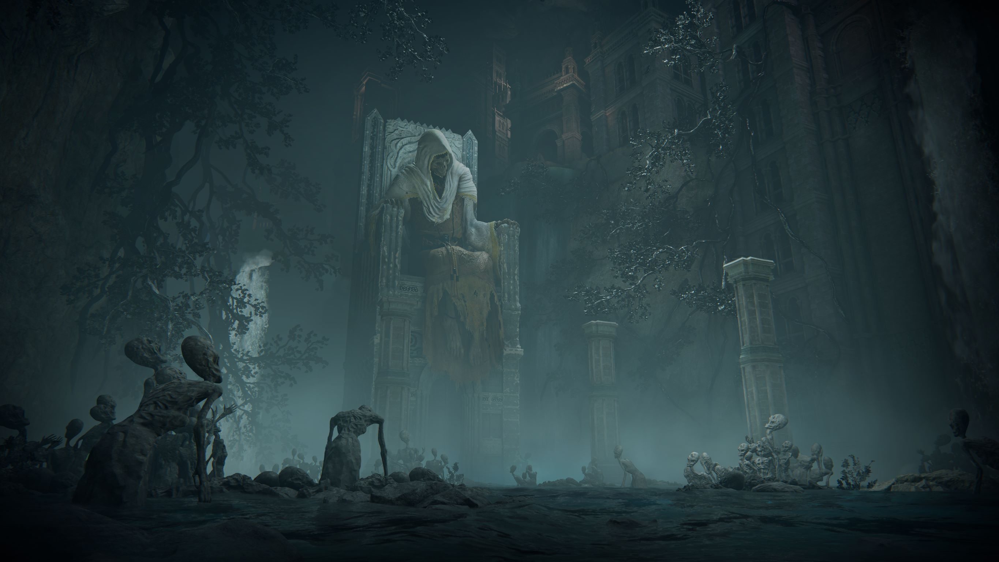Elden Ring will maintain a recurring mechanic from past FromSoftware titles with fast travel. Instead of using bonfires, players will fast travel via “sites of lost grace.” When chatting with The Verge, FromSoftwares Yasuhiro Kitao spoke more about the feature.
“By opening the map, the player can fast travel to any previously visited “site of lost grace,” as long as theyre not within a dungeon currently. It just alleviates some of that stress, and having this burden in the back of your mind of having to travel all the way back to where youve previously been. It streamlines that a little bit.”
Kitao also mentioned that although fast travel will be convenient for players, the world of Elden Ring is stuffed with enough detail that will make it worth exploring the old fashioned way as well.
Create your RPG character
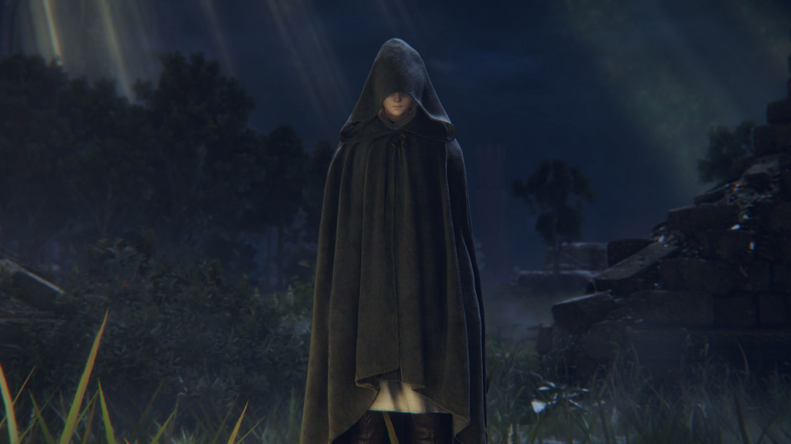As an RPG, Elden Ring will return to the Soulsborne way of letting players design their character. This means youll get to create your mug in-game as opposed to being locked to a beautiful specimen like the Wolf from Sekiro: Shadows Die Twice.
The RPG elements also extend to the gameplay. As mentioned above, combat choices are a big factor in Elden Ring, as is how you approach the world. The official site says there are a “variety of weapons, magical abilities, and skills found throughout the world” which leads us to believe youll be searching every corner for a Zweihander so you can power up the bass cannon once more.
Beyond Elden Ring
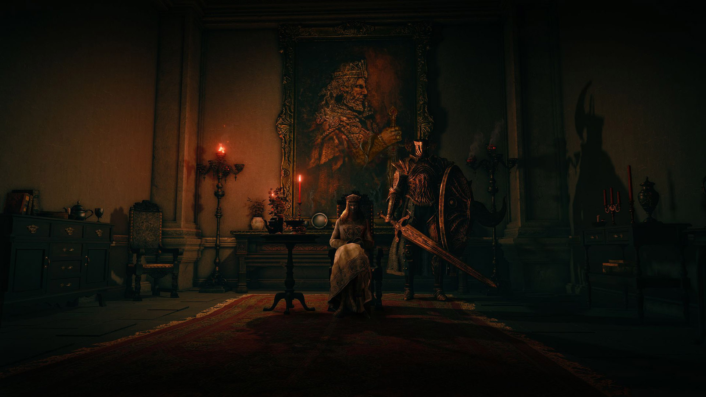While we all cannot wait to get our hands on Elden Ring, it seems Bandai Namco could be planning some extracurricular material for players. PC Gamer has reported President Yasuo Miyakawa as stating in a press release, “We will continue to develop Elden Ring not only as a game but also in a variety of other areas in order to deliver the worldview and charm of this title to our fans around the world.” This could mean anything from graphic novels and comics to other forms of content, like TV productions.
Elden Ring images
Take a look at the some of the Elden Ring images I couldnt fit into other areas. There are a lot of details here to enjoy. First up, it's the infamous Pot Goblin.
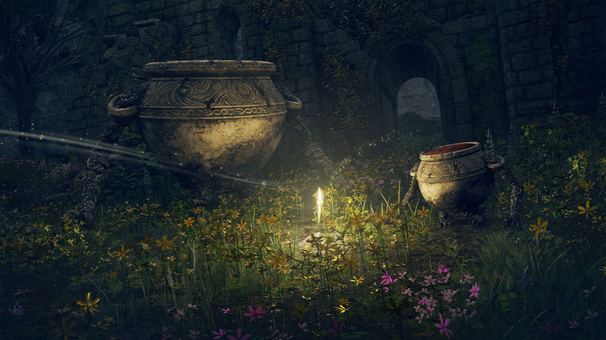I wonder what secrets they hold? Now, check out this character cowering before a morningstar.
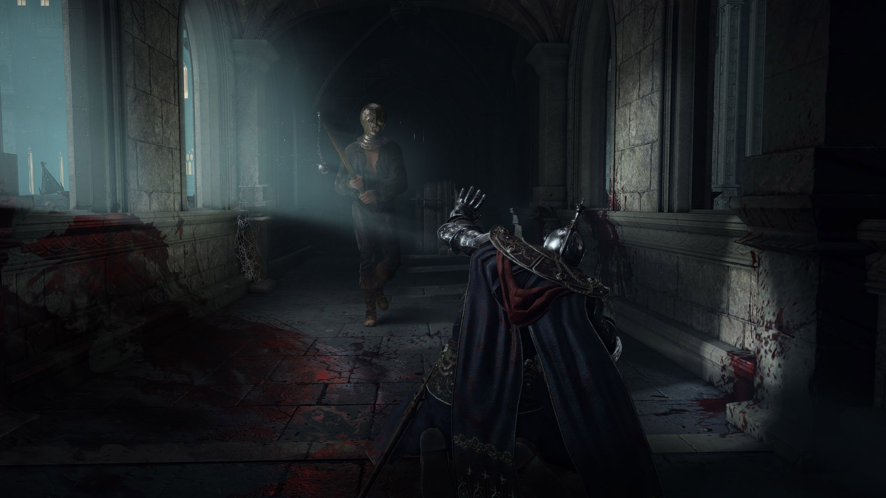Lots of blood in that room. Now we've got presumably the main character on horseback, fighting whhat looks to be a tentacle-faced monster covered in a lace hood. Lovely.
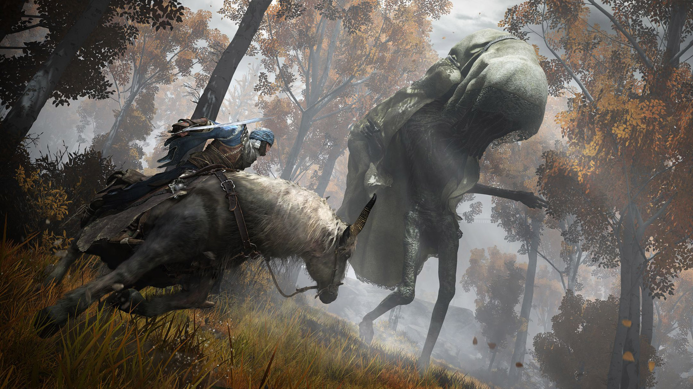Check out this horse versus horse action. Mounted boss battles?
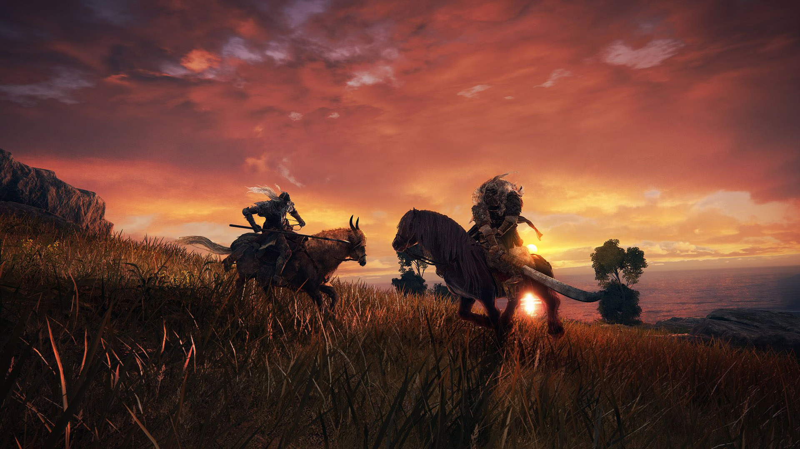There's lots going on in this image. It looks like the character is using some sort of spell that summons a bird. There's an archer in the background, some defences, and obviously the big bloke in the foreground.
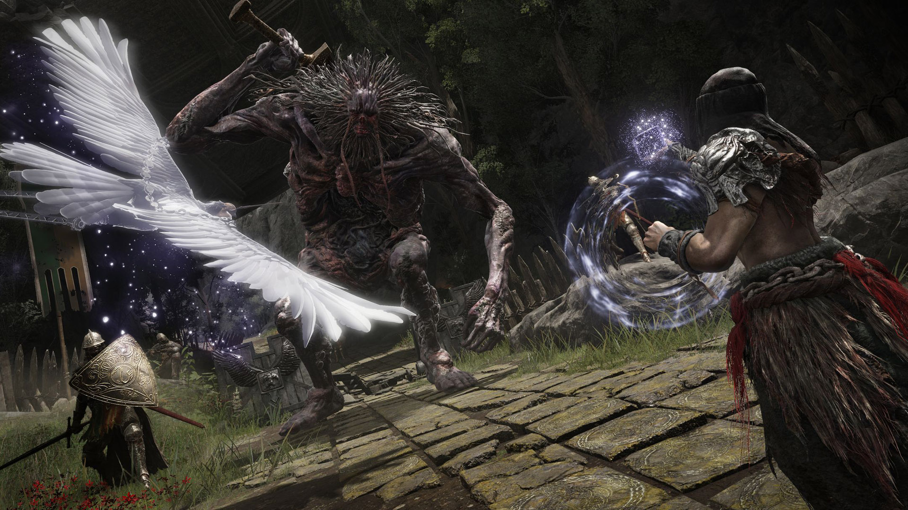Thats all weve got for the time being on Elden Ring. Make sure you continue to check back with us as we dig deeper into the corners of the internet to bring you everything you need to know about Elden Ring. You can also stop by the Shacknews Elden Ring page for the latest news.